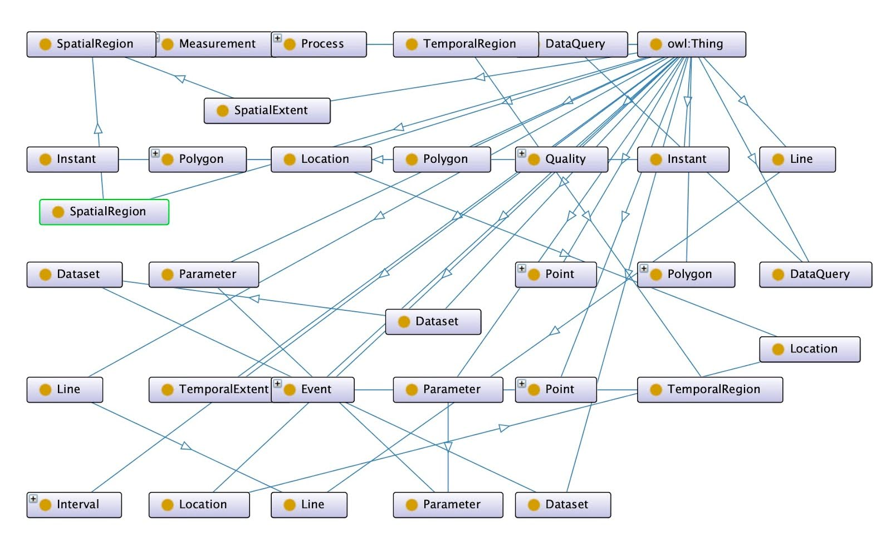
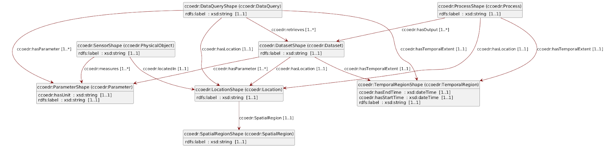

Technical Implementation
CCO provides a broader and more general ontology for modeling entities, processes, qualities, and relationships, making it suitable for semantic interoperability across domains.
EDR is narrower and focuses specifically on environmental data retrieval through APIs, with concepts.
Table 1 below provides a mapping between CCO and OGC EDR showing the BroaderThan, NarrowerThan and similar concepts
Table 1. Cross-Walk between CCO and OGC EDR
| Category | CCO Concept/Property | EDR Concept/Property | Relationship |
|---|---|---|---|
| Core Entities | |||
| Object | cco:Object | No direct correspondence in EDR | Broader in CCO |
| Physical Object | cco:PhysicalObject | No direct correspondence in EDR | Broader in CCO |
| Process | cco:Process | No direct correspondence in EDR | Broader in CCO |
| Event | cco:Event | No direct correspondence in EDR | Broader in CCO |
| Quality | cco:Quality | No direct correspondence in EDR | Broader in CCO |
| Location | cco:Location | edr:Location | Similar |
| Spatial Region | cco:SpatialRegion | edr:SpatialExtent | Similar |
| Temporal Region | cco:TemporalRegion | edr:TemporalExtent | Similar |
| Parameter | cco:Parameter | edr:Parameter | Similar |
| Information Object | cco:InformationObject | No direct correspondence in EDR | Broader in CCO |
| Dataset | cco:Dataset | edr:Dataset | Similar |
| Measurement | cco:Measurement | No correspondence in EDR | Broader in CCO |
| Data Query | No correspondence in CCO | edr:DataQuery | Narrower in EDR |
| Properties/Relationships | |||
| hasQuality | cco:hasQuality | No direct correspondence in EDR | Broader in CCO |
| locatedIn | cco:locatedIn | edr:hasLocation | Similar |
| participatesIn | cco:participatesIn | No direct correspondence in EDR | Broader in CCO |
| hasParameter | cco:hasParameter | edr:hasParameter | Similar |
| hasPart | cco:hasPart | No direct correspondence in EDR | Broader in CCO |
| hasTemporalRegion | cco:hasTemporalRegion | edr:hasTemporalExtent | Similar |
| hasValue | cco:hasValue | edr:hasValue | Similar |
| hasUnit | cco:hasUnit | edr:hasUnit | Similar |
| hasOutput | cco:hasOutput | No direct correspondence in EDR | Broader in CCO |
| Spatial/Temporal Types | |||
| Point | cco:Point | edr:Point | Similar |
| Line | cco:Line | edr:Line | Similar |
| Polygon | cco:Polygon | edr:Polygon | Similar |
| Instant | cco:Instant | No direct correspondence in EDR | Broader in CCO |
| Interval | cco:Interval | No direct correspondence in EDR | Broader in CCO |
| Data and Measurements | |||
| Information Object | cco:InformationObject | No direct correspondence in EDR | Broader in CCO |
| Measurement | cco:Measurement | No direct correspondence in EDR | Broader in CCO |
| Dataset | cco:Dataset | edr:Dataset | Similar |
| Data Query | No direct correspondence in CCO | edr:DataQuery | Narrower in EDR |
| Qualities and Parameters | |||
| Quality | cco:Quality | No direct correspondence in EDR | Broader in CCO |
| Parameter | cco:Parameter | edr:Parameter | Similar |
Link/Bridge Concepts
The Link/bridge concepts in the shared ontology are used to align and integrate the Common Core Ontologies (CCO) and the OGC Environmental Data Retrieval (EDR). These bridge concepts ensure that the two ontologies can be interoperable. Table 2 below shows the bridge relationships between CCO and EDR.
Table 2: Bridge concepts between CCO and EDR
| Bridge/Link Concept | CCO Concept | OGC EDR Concept |
|---|---|---|
| EnvironmentalData | cco:InformationContentEntity | edr:EnvironmentalData |
| Sensor | cco:Device | edr:Sensor |
| Observation | cco:Process | edr:Observation |
| FeatureOfInterest | cco:Object | edr:FeatureOfInterest |
| Measurement | cco:QualityValue | edr:Measurement |
| Location | cco:SpatialLocation | edr:Location |
| Time | cco:TemporalLocation | edr:Time |
| hasLocation | cco:hasSpatialLocation | edr:hasLocation |
| hasTime | cco:hasTemporalLocation | edr:hasTime |
| observes | cco:performs | edr:observes |
Using the bridge concepts and the concept mappings described above the shared ontology is shown below.
Shared Ontology (ccoedr):
The Shared ontology or reference ontology (ccoedr) serves as the top level ontology that has more expressive terminology. Below is the shared ontology representationin OWL.
<?xml version="1.0"?>
<rdf:RDF xmlns="http://www.w3.org/2002/07/owl\#"
xml:base="http://www.w3.org/2002/07/owl"
xmlns:cco="http://www.ontologyrepository.com/CommonCoreOntologies\#"
xmlns:edr="http://www.opengis.net/ont/edr\#"
xmlns:owl="http://www.w3.org/2002/07/owl\#"
xmlns:rdf="http://www.w3.org/1999/02/22-rdf-syntax-ns\#"
xmlns:xml="http://www.w3.org/XML/1998/namespace"
xmlns:xsd="http://www.w3.org/2001/XMLSchema\#"
xmlns:rdfs="http://www.w3.org/2000/01/rdf-schema\#"
xmlns:ccoedr="http://www.example.org/ccoedr\#">
<Ontology/>
<!--
///////////////////////////////////////////////////////////////////////////////////////
//
// Object Properties
//
///////////////////////////////////////////////////////////////////////////////////////
-->
<!-- http://www.example.org/ccoedr\#hasLocation -->
<ObjectProperty rdf:about="http://www.example.org/ccoedr\#hasLocation">
<rdfs:subPropertyOf rdf:resource="http://www.ontologyrepository.com/CommonCoreOntologies\#locatedIn"/>
<rdfs:subPropertyOf rdf:resource="http://www.opengis.net/ont/edr\#hasLocation"/>
</ObjectProperty>
<!-- http://www.example.org/ccoedr\#hasOutput -->
<ObjectProperty rdf:about="http://www.example.org/ccoedr\#hasOutput">
<rdfs:subPropertyOf rdf:resource="http://www.ontologyrepository.com/CommonCoreOntologies\#hasOutput"/>
<inverseOf rdf:resource="http://www.example.org/ccoedr\#retrieves"/>
<propertyChainAxiom rdf:parseType="Collection">
<rdf:Description rdf:about="http://www.example.org/ccoedr\#hasOutput"/>
<rdf:Description rdf:about="http://www.example.org/ccoedr\#retrieves"/>
</propertyChainAxiom>
</ObjectProperty>
<!-- http://www.example.org/ccoedr\#hasParameter -->
<ObjectProperty rdf:about="http://www.example.org/ccoedr\#hasParameter">
<rdfs:subPropertyOf rdf:resource="http://www.ontologyrepository.com/CommonCoreOntologies\#hasParameter"/>
<rdfs:subPropertyOf rdf:resource="http://www.opengis.net/ont/edr\#hasParameter"/>
<inverseOf rdf:resource="http://www.example.org/ccoedr\#measures"/>
<propertyChainAxiom rdf:parseType="Collection">
<rdf:Description rdf:about="http://www.example.org/ccoedr\#hasParameter"/>
<rdf:Description rdf:about="http://www.example.org/ccoedr\#measures"/>
</propertyChainAxiom>
</ObjectProperty>
<!-- http://www.example.org/ccoedr\#hasQuality -->
<ObjectProperty rdf:about="http://www.example.org/ccoedr\#hasQuality">
<rdfs:subPropertyOf rdf:resource="http://www.ontologyrepository.com/CommonCoreOntologies\#hasQuality"/>
</ObjectProperty>
<!-- http://www.example.org/ccoedr\#hasTemporalExtent -->
<ObjectProperty rdf:about="http://www.example.org/ccoedr\#hasTemporalExtent">
<rdfs:subPropertyOf rdf:resource="http://www.ontologyrepository.com/CommonCoreOntologies\#hasTemporalRegion"/>
<rdfs:subPropertyOf rdf:resource="http://www.opengis.net/ont/edr\#hasTemporalExtent"/>
</ObjectProperty>
<!-- http://www.example.org/ccoedr\#hasUnit -->
<ObjectProperty rdf:about="http://www.example.org/ccoedr\#hasUnit">
<rdfs:subPropertyOf rdf:resource="http://www.opengis.net/ont/edr\#hasUnit"/>
</ObjectProperty>
<!-- http://www.example.org/ccoedr\#hasValue -->
<ObjectProperty rdf:about="http://www.example.org/ccoedr\#hasValue">
<rdfs:subPropertyOf rdf:resource="http://www.opengis.net/ont/edr\#hasValue"/>
</ObjectProperty>
<!-- http://www.example.org/ccoedr\#measures -->
<ObjectProperty rdf:about="http://www.example.org/ccoedr\#measures"/>
<!-- http://www.example.org/ccoedr\#participatesIn -->
<ObjectProperty rdf:about="http://www.example.org/ccoedr\#participatesIn">
<rdfs:subPropertyOf rdf:resource="http://www.ontologyrepository.com/CommonCoreOntologies\#participatesIn"/>
</ObjectProperty>
<!-- http://www.example.org/ccoedr\#retrieves -->
<ObjectProperty rdf:about="http://www.example.org/ccoedr\#retrieves"/>
<!-- http://www.ontologyrepository.com/CommonCoreOntologies\#hasOutput -->
<ObjectProperty rdf:about="http://www.ontologyrepository.com/CommonCoreOntologies\#hasOutput"/>
<!-- http://www.ontologyrepository.com/CommonCoreOntologies\#hasParameter -->
<ObjectProperty rdf:about="http://www.ontologyrepository.com/CommonCoreOntologies\#hasParameter"/>
<!-- http://www.ontologyrepository.com/CommonCoreOntologies\#hasQuality -->
<ObjectProperty rdf:about="http://www.ontologyrepository.com/CommonCoreOntologies\#hasQuality"/>
<!-- http://www.ontologyrepository.com/CommonCoreOntologies\#hasTemporalRegion -->
<ObjectProperty rdf:about="http://www.ontologyrepository.com/CommonCoreOntologies\#hasTemporalRegion"/>
<!-- http://www.ontologyrepository.com/CommonCoreOntologies\#locatedIn -->
<ObjectProperty rdf:about="http://www.ontologyrepository.com/CommonCoreOntologies\#locatedIn"/>
<!-- http://www.ontologyrepository.com/CommonCoreOntologies\#participatesIn -->
<ObjectProperty rdf:about="http://www.ontologyrepository.com/CommonCoreOntologies\#participatesIn"/>
<!-- http://www.opengis.net/ont/edr\#hasLocation -->
<ObjectProperty rdf:about="http://www.opengis.net/ont/edr\#hasLocation"/>
<!-- http://www.opengis.net/ont/edr\#hasParameter -->
<ObjectProperty rdf:about="http://www.opengis.net/ont/edr\#hasParameter"/>
<!-- http://www.opengis.net/ont/edr\#hasTemporalExtent -->
<ObjectProperty rdf:about="http://www.opengis.net/ont/edr\#hasTemporalExtent"/>
<!-- http://www.opengis.net/ont/edr\#hasUnit -->
<ObjectProperty rdf:about="http://www.opengis.net/ont/edr\#hasUnit"/>
<!-- http://www.opengis.net/ont/edr\#hasValue -->
<ObjectProperty rdf:about="http://www.opengis.net/ont/edr\#hasValue"/>
<!--
///////////////////////////////////////////////////////////////////////////////////////
//
// Classes
//
///////////////////////////////////////////////////////////////////////////////////////
-->
<!-- http://www.example.org/ccoedr\#DataQuery -->
<Class rdf:about="http://www.example.org/ccoedr\#DataQuery">
<rdfs:subClassOf rdf:resource="http://www.opengis.net/ont/edr\#DataQuery"/>
</Class>
<!-- http://www.example.org/ccoedr\#Dataset -->
<Class rdf:about="http://www.example.org/ccoedr\#Dataset">
<rdfs:subClassOf rdf:resource="http://www.ontologyrepository.com/CommonCoreOntologies\#Dataset"/>
<rdfs:subClassOf rdf:resource="http://www.opengis.net/ont/edr\#Dataset"/>
</Class>
<!-- http://www.example.org/ccoedr\#Event -->
<Class rdf:about="http://www.example.org/ccoedr\#Event">
<rdfs:subClassOf rdf:resource="http://www.ontologyrepository.com/CommonCoreOntologies\#Event"/>
</Class>
<!-- http://www.example.org/ccoedr\#Instant -->
<Class rdf:about="http://www.example.org/ccoedr\#Instant">
<rdfs:subClassOf rdf:resource="http://www.ontologyrepository.com/CommonCoreOntologies\#Instant"/>
</Class>
<!-- http://www.example.org/ccoedr\#Interval -->
<Class rdf:about="http://www.example.org/ccoedr\#Interval">
<rdfs:subClassOf rdf:resource="http://www.ontologyrepository.com/CommonCoreOntologies\#Interval"/>
</Class>
<!-- http://www.example.org/ccoedr\#Line -->
<Class rdf:about="http://www.example.org/ccoedr\#Line">
<rdfs:subClassOf rdf:resource="http://www.ontologyrepository.com/CommonCoreOntologies\#Line"/>
<rdfs:subClassOf rdf:resource="http://www.opengis.net/ont/edr\#Line"/>
</Class>
<!-- http://www.example.org/ccoedr\#Location -->
<Class rdf:about="http://www.example.org/ccoedr\#Location">
<rdfs:subClassOf rdf:resource="http://www.ontologyrepository.com/CommonCoreOntologies\#Location"/>
<rdfs:subClassOf rdf:resource="http://www.opengis.net/ont/edr\#Location"/>
</Class>
<!-- http://www.example.org/ccoedr\#Measurement -->
<Class rdf:about="http://www.example.org/ccoedr\#Measurement">
<rdfs:subClassOf rdf:resource="http://www.ontologyrepository.com/CommonCoreOntologies\#Measurement"/>
</Class>
<!-- http://www.example.org/ccoedr\#Parameter -->
<Class rdf:about="http://www.example.org/ccoedr\#Parameter">
<rdfs:subClassOf rdf:resource="http://www.ontologyrepository.com/CommonCoreOntologies\#Parameter"/>
<rdfs:subClassOf rdf:resource="http://www.opengis.net/ont/edr\#Parameter"/>
</Class>
<!-- http://www.example.org/ccoedr\#Point -->
<Class rdf:about="http://www.example.org/ccoedr\#Point">
<rdfs:subClassOf rdf:resource="http://www.ontologyrepository.com/CommonCoreOntologies\#Point"/>
<rdfs:subClassOf rdf:resource="http://www.opengis.net/ont/edr\#Point"/>
</Class>
<!-- http://www.example.org/ccoedr\#Polygon -->
<Class rdf:about="http://www.example.org/ccoedr\#Polygon">
<rdfs:subClassOf rdf:resource="http://www.ontologyrepository.com/CommonCoreOntologies\#Polygon"/>
<rdfs:subClassOf rdf:resource="http://www.opengis.net/ont/edr\#Polygon"/>
</Class>
<!-- http://www.example.org/ccoedr\#Process -->
<Class rdf:about="http://www.example.org/ccoedr\#Process">
<rdfs:subClassOf rdf:resource="http://www.ontologyrepository.com/CommonCoreOntologies\#Process"/>
</Class>
<!-- http://www.example.org/ccoedr\#Quality -->
<Class rdf:about="http://www.example.org/ccoedr\#Quality">
<rdfs:subClassOf rdf:resource="http://www.ontologyrepository.com/CommonCoreOntologies\#Quality"/>
</Class>
<!-- http://www.example.org/ccoedr\#SpatialRegion -->
<Class rdf:about="http://www.example.org/ccoedr\#SpatialRegion">
<rdfs:subClassOf rdf:resource="http://www.ontologyrepository.com/CommonCoreOntologies\#SpatialRegion"/>
<rdfs:subClassOf rdf:resource="http://www.opengis.net/ont/edr\#SpatialExtent"/>
</Class>
<!-- http://www.example.org/ccoedr\#TemporalRegion -->
<Class rdf:about="http://www.example.org/ccoedr\#TemporalRegion">
<rdfs:subClassOf rdf:resource="http://www.ontologyrepository.com/CommonCoreOntologies\#TemporalRegion"/>
<rdfs:subClassOf rdf:resource="http://www.opengis.net/ont/edr\#TemporalExtent"/>
</Class>
<!-- http://www.ontologyrepository.com/CommonCoreOntologies\#Dataset -->
<Class rdf:about="http://www.ontologyrepository.com/CommonCoreOntologies\#Dataset"/>
<!-- http://www.ontologyrepository.com/CommonCoreOntologies\#Event -->
<Class rdf:about="http://www.ontologyrepository.com/CommonCoreOntologies\#Event"/>
<!-- http://www.ontologyrepository.com/CommonCoreOntologies\#Instant -->
<Class rdf:about="http://www.ontologyrepository.com/CommonCoreOntologies\#Instant"/>
<!-- http://www.ontologyrepository.com/CommonCoreOntologies\#Interval -->
<Class rdf:about="http://www.ontologyrepository.com/CommonCoreOntologies\#Interval"/>
<!-- http://www.ontologyrepository.com/CommonCoreOntologies\#Line -->
<Class rdf:about="http://www.ontologyrepository.com/CommonCoreOntologies\#Line"/>
<!-- http://www.ontologyrepository.com/CommonCoreOntologies\#Location -->
<Class rdf:about="http://www.ontologyrepository.com/CommonCoreOntologies\#Location"/>
<!-- http://www.ontologyrepository.com/CommonCoreOntologies\#Measurement -->
<Class rdf:about="http://www.ontologyrepository.com/CommonCoreOntologies\#Measurement"/>
<!-- http://www.ontologyrepository.com/CommonCoreOntologies\#Parameter -->
<Class rdf:about="http://www.ontologyrepository.com/CommonCoreOntologies\#Parameter"/>
<!-- http://www.ontologyrepository.com/CommonCoreOntologies\#Point -->
<Class rdf:about="http://www.ontologyrepository.com/CommonCoreOntologies\#Point"/>
<!-- http://www.ontologyrepository.com/CommonCoreOntologies\#Polygon -->
<Class rdf:about="http://www.ontologyrepository.com/CommonCoreOntologies\#Polygon"/>
<!-- http://www.ontologyrepository.com/CommonCoreOntologies\#Process -->
<Class rdf:about="http://www.ontologyrepository.com/CommonCoreOntologies\#Process"/>
<!-- http://www.ontologyrepository.com/CommonCoreOntologies\#Quality -->
<Class rdf:about="http://www.ontologyrepository.com/CommonCoreOntologies\#Quality"/>
<!-- http://www.ontologyrepository.com/CommonCoreOntologies\#SpatialRegion -->
<Class rdf:about="http://www.ontologyrepository.com/CommonCoreOntologies\#SpatialRegion"/>
<!-- http://www.ontologyrepository.com/CommonCoreOntologies\#TemporalRegion -->
<Class rdf:about="http://www.ontologyrepository.com/CommonCoreOntologies\#TemporalRegion"/>
<!-- http://www.opengis.net/ont/edr\#DataQuery -->
<Class rdf:about="http://www.opengis.net/ont/edr\#DataQuery"/>
<!-- http://www.opengis.net/ont/edr\#Dataset -->
<Class rdf:about="http://www.opengis.net/ont/edr\#Dataset"/>
<!-- http://www.opengis.net/ont/edr\#Line -->
<Class rdf:about="http://www.opengis.net/ont/edr\#Line"/>
<!-- http://www.opengis.net/ont/edr\#Location -->
<Class rdf:about="http://www.opengis.net/ont/edr\#Location"/>
<!-- http://www.opengis.net/ont/edr\#Parameter -->
<Class rdf:about="http://www.opengis.net/ont/edr\#Parameter"/>
<!-- http://www.opengis.net/ont/edr\#Point -->
<Class rdf:about="http://www.opengis.net/ont/edr\#Point"/>
<!-- http://www.opengis.net/ont/edr\#Polygon -->
<Class rdf:about="http://www.opengis.net/ont/edr\#Polygon"/>
<!-- http://www.opengis.net/ont/edr\#SpatialExtent -->
<Class rdf:about="http://www.opengis.net/ont/edr\#SpatialExtent"/>
<!-- http://www.opengis.net/ont/edr\#TemporalExtent -->
<Class rdf:about="http://www.opengis.net/ont/edr\#TemporalExtent"/>
</rdf:RDF>

SHACL Schema for the Shared Ontology
@prefix rdf: <http://www.w3.org/1999/02/22-rdf-syntax-ns\#> .
@prefix rdfs: <http://www.w3.org/2000/01/rdf-schema\#> .
@prefix sh: <http://www.w3.org/ns/shacl\#> .
@prefix cco: <http://www.ontologyrepository.com/CommonCoreOntologies/> .
@prefix edr: <http://www.opengis.net/ont/edr\#> .
@prefix ccoedr: <http://www.example.org/ccoedr\#> .
@prefix xsd: <http://www.w3.org/2001/XMLSchema\#> .
Shape for Location
ccoedr:LocationShape
a sh:NodeShape ;
sh:targetClass ccoedr:Location ;
sh:property [
sh:path rdfs:label ;
sh:datatype xsd:string ;
sh:minCount 1 ;
sh:maxCount 1 ;
] ;
sh:property [
sh:path ccoedr:SpatialRegion ;
sh:class ccoedr:SpatialRegion ;
sh:minCount 1 ;
sh:maxCount 1 ;
]
Shape for Spatial Region
ccoedr:SpatialRegionShape
a sh:NodeShape ;
sh:targetClass ccoedr:SpatialRegion ;
sh:property [
sh:path rdfs:label ;
sh:datatype xsd:string ;
sh:minCount 1 ;
sh:maxCount 1 ;
]
Shape for Temporal Region
ccoedr:TemporalRegionShape
a sh:NodeShape ;
sh:targetClass ccoedr:TemporalRegion ;
sh:property [
sh:path rdfs:label ;
sh:datatype xsd:string ;
sh:minCount 1 ;
sh:maxCount 1 ;
] ;
sh:property [
sh:path ccoedr:hasStartTime ;
sh:datatype xsd:dateTime ;
sh:minCount 1 ;
sh:maxCount 1 ;
] ;
sh:property [
sh:path ccoedr:hasEndTime ;
sh:datatype xsd:dateTime ;
sh:minCount 1 ;
sh:maxCount 1 ;
]
Shape for Parameter
ccoedr:ParameterShape
a sh:NodeShape ;
sh:targetClass ccoedr:Parameter ;
sh:property [
sh:path rdfs:label ;
sh:datatype xsd:string ;
sh:minCount 1 ;
sh:maxCount 1 ;
] ;
sh:property [
sh:path ccoedr:hasUnit ;
sh:datatype xsd:string ;
sh:minCount 1 ;
sh:maxCount 1 ;
]
Shape for Dataset
ccoedr:DatasetShape
a sh:NodeShape ;
sh:targetClass ccoedr:Dataset ;
sh:property [
sh:path rdfs:label ;
sh:datatype xsd:string ;
sh:minCount 1 ;
sh:maxCount 1 ;
] ;
sh:property [
sh:path ccoedr:hasParameter ;
sh:class ccoedr:Parameter ;
sh:minCount 1 ;
] ;
sh:property [
sh:path ccoedr:hasTemporalExtent ;
sh:class ccoedr:TemporalRegion ;
sh:minCount 1 ;
sh:maxCount 1 ;
] ;
sh:property [
sh:path ccoedr:hasLocation ;
sh:class ccoedr:Location ;
sh:minCount 1 ;
sh:maxCount 1 ;
]
Shape for Process
ccoedr:ProcessShape
a sh:NodeShape ;
sh:targetClass ccoedr:Process ;
sh:property [
sh:path rdfs:label ;
sh:datatype xsd:string ;
sh:minCount 1 ;
sh:maxCount 1 ;
] ;
sh:property [
sh:path ccoedr:hasLocation ;
sh:class ccoedr:Location ;
sh:minCount 1 ;
sh:maxCount 1 ;
] ;
sh:property [
sh:path ccoedr:hasTemporalExtent ;
sh:class ccoedr:TemporalRegion ;
sh:minCount 1 ;
sh:maxCount 1 ;
] ;
sh:property [
sh:path ccoedr:hasOutput ;
sh:class ccoedr:Dataset ;
sh:minCount 1 ;
]
Shape for Sensor (Physical Object)
ccoedr:SensorShape
a sh:NodeShape ;
sh:targetClass ccoedr:PhysicalObject ;
sh:property [
sh:path rdfs:label ;
sh:datatype xsd:string ;
sh:minCount 1 ;
sh:maxCount 1 ;
] ;
sh:property [
sh:path ccoedr:locatedIn ;
sh:class ccoedr:Location ;
sh:minCount 1 ;
sh:maxCount 1 ;
] ;
sh:property [
sh:path ccoedr:measures ;
sh:class ccoedr:Parameter ;
sh:minCount 1 ;
]
Shape for Data Query
ccoedr:DataQueryShape
a sh:NodeShape ;
sh:targetClass ccoedr:DataQuery ;
sh:property [
sh:path rdfs:label ;
sh:datatype xsd:string ;
sh:minCount 1 ;
sh:maxCount 1 ;
] ;
sh:property [
sh:path ccoedr:hasParameter ;
sh:class ccoedr:Parameter ;
sh:minCount 1 ;
] ;
sh:property [
sh:path ccoedr:hasLocation ;
sh:class ccoedr:Location ;
sh:minCount 1 ;
sh:maxCount 1 ;
] ;
sh:property [
sh:path ccoedr:hasTemporalExtent ;
sh:class ccoedr:TemporalRegion ;
sh:minCount 1 ;
sh:maxCount 1 ;
] ;
sh:property [
sh:path ccoedr:retrieves ;
sh:class ccoedr:Dataset ;
sh:minCount 1 ;
]
The above SHACL schema defines constraints and validation rules to ensure that the data conforms to the structure and relationships defined in the CCO-EDR shared ontology. The UML representation of the SHACL above is shown in figure below.

Semantically Annotated OGC EDR Example Data using the Shared Ontology in JSON-LD
{
"@context": {
"id": "@id",
"type": "@type",
"graph": "@graph",
"cco": "http://www.ontologyrepository.com/CommonCoreOntologies/",
"ccoedr": "http://www.example.org/ccoedr#",
"edr": "http://www.opengis.net/ont/edr#",
"rdf": "http://www.w3.org/1999/02/22-rdf-syntax-ns#",
"rdfs": "http://www.w3.org/2000/01/rdf-schema#",
"sh": "http://www.w3.org/ns/shacl#",
"xsd": "http://www.w3.org/2001/XMLSchema#",
"DataQueryShape": "ccoedr:DataQueryShape",
"DatasetShape": "ccoedr:DatasetShape",
"FloodEventShape": "ccoedr:FloodEventShape",
"LocationShape": "ccoedr:LocationShape",
"ParameterShape": "ccoedr:ParameterShape",
"SensorShape": "ccoedr:SensorShape",
"TemporalRegionShape": "ccoedr:TemporalRegionShape",
"hasEndTime": {
"@id": "ccoedr:hasEndTime",
"@type": "http://www.w3.org/2001/XMLSchema#dateTime"
},
"hasLocation": {
"@id": "ccoedr:hasLocation",
"@type": "@id"
},
"hasOutput": {
"@id": "ccoedr:hasOutput",
"@type": "@id",
"@container": "@set"
},
"hasParameter": {
"@id": "ccoedr:hasParameter",
"@type": "@id",
"@container": "@set"
},
"hasStartTime": {
"@id": "ccoedr:hasStartTime",
"@type": "http://www.w3.org/2001/XMLSchema#dateTime"
},
"hasTemporalExtent": {
"@id": "ccoedr:hasTemporalExtent",
"@type": "@id"
},
"hasUnit": {
"@id": "ccoedr:hasUnit",
"@type": "http://www.w3.org/2001/XMLSchema#string"
},
"label": {
"@id": "rdfs:label",
"@type": "http://www.w3.org/2001/XMLSchema#string"
},
"locatedIn": {
"@id": "ccoedr:locatedIn",
"@type": "@id"
},
"measures": {
"@id": "ccoedr:measures",
"@type": "@id",
"@container": "@set"
},
"retrieves": {
"@id": "ccoedr:retrieves",
"@type": "@id",
"@container": "@set"
},
"SpatialRegion": {
"@id": "ccoedr:SpatialRegion",
"@type": "@id"
}
}
}
The above JSON-LD document represents a semantically annotated dataset using the Shared Ontology. It includes metadata such as temporal extent, location, and associated parameters while conforming to the OGC Environmental Data Retrieval (EDR) standard.